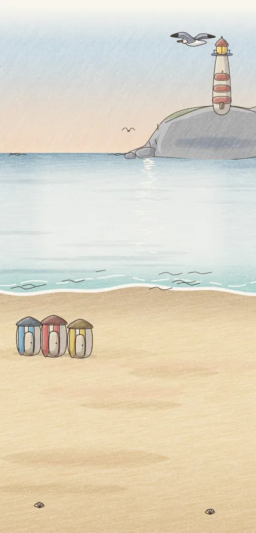

um objetivo por dia.
não uma lista: só um, aquele que você vem adiando há tempo demais.
em breve na App Store
segure o círculo.
como funciona.
escolha um objetivo. só um, para hoje.
é assim que se para de adiar: um pequeno passo de cada vez.
quando concluir, segure o círculo.
até ele se fechar. é o seu sinal de feito.
cada objetivo concluído pinta um pedaço do quadro.
com 30, o quadro fica pronto. se você pular um dia, ele espera.




os dias feitos ficam.
cada objetivo concluído é um pedaço do quadro: 30 pedaços, mesmo que não sejam seguidos.

o que vamos pintar agora?
quando um quadro fica pronto, eu o penduro no seu ateliê e começa outro.
- a costa no inverno

- o jardim

- o bosque no outono

- o deserto vermelho

- o luminoso


no seu ateliê mora um companheiro.
ele espera por você lá todo dia, enquanto você pinta. escolha quem.

1thing plus.
o 1thing é grátis. com o 1thing plus:
- seu ateliê, decorado do seu jeito.
- plantas, cortinas, luzinhas, seu companheiro: mais de 40 coisas.
- nos dias vazios, eu encontro o objetivo certo para você.
- sei o que importa para você.
- o próximo quadro, quem escolhe é você.
- qualquer quadro, quando quiser.
- o amanhecer, o pôr do sol e a noite.
- o quadro muda com a hora em que você conclui seu objetivo.
- ícone e widgets do seu jeito.
- o app fica com a sua cara.
experimente grátis por 14 dias.
um objetivo por dia.
para iPhone.
em breve na App Store